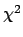
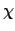
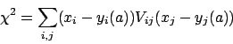
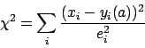
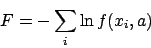
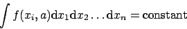
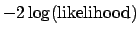

Next: Non-linearities: MIGRAD versus HESSE
Up: Interpretation of the errors
Previous: Interpretation of the errors
Index
Subsections
In order to provide for full generality in the user-defined function
value, the user is allowed to define a normalization factor known
internally as UP and defined by the Minuit user on an
ERROR DEF command card. The default value is
one. The Minuit error on a parameter is defined as the change of
parameter which would produce a change of the function value equal to
UP. This is the most general way to define the error,
although in statistics it is more usual to define it in terms of the
second derivative of the 
function - with respect to the
parameter in question. In the simplest linear case (when the function
is exactly parabolic at the minimum), the value UP=1.0
corresponds to defining the error as the inverse of the second
derivative at the minimum. The fact that Minuit defines the error in
terms of a function change does not mean that it always calculates
such a function change. Indeed it sometimes (HESSE)
calculates the second derivative matrix and inverts it, assuming a
parabolic behaviour. This distinction is discussed in section
7.2.
The purpose of defining errors by function changes is threefold:
- 1.
- to preserve its meaning in the non-parabolic case (see section
7.2);
- 2.
- to allow generality when the user-defined function is not a chi-
square or likelihood, but has some other origin;
- 3.
- to allow calculation not only of ``one-standard deviation''
errors, but also two or more standard deviations, or more general
'confidence regions', especially in the multiparameter case (see
section 7.3).
If the user's function value F is supposed to be a chisquare, it must
of course be properly normalized. That is, the ``weights'' must in fact
correspond to the one-standard-deviation errors on the observations.
The most general expression for the chi-square 
is of
the form (see [5], p.163):

where x is the vector of observations, y(a) is the vector of fitted
values (or theoretical expressions for them) containing the variable
fit parameters a, and V is the inverse of the error matrix of the
observations x, also known as the covariance matrix of the
observations.
Fortunately, in most real cases the observations x are statistically
independent of each other (e.g., the contents of the bins of a
histogram, or measurements of points on a trajectory), so the
matrix V is diagonal only. The expression for
then simplifies to
the more familiar form:

where e2 is the inverse of the diagonal element of V, the square of
the error on the corresponding observation x. In the case where the x
are integer numbers of events in an unweighted histogram, for
example, the e2 are just equal to the x (or to the y, see [5],
pp.170-171).
The minimization of
above is sometimes called weighted least
squares in which case the inverse quantities 1/e2 are called the weights.
Clearly this is simply a different word for the same thing,
but in practice the use of these words sometimes means that the
interpretation of e2 as variances or squared errors is not
straightforward. The word weight often implies that only the
relative weights are known (``point two is twice as important as
point one'') in which case there is apparently an unknown overall
normalization factor. Unfortunately the parameter errors coming out
of such a fit will be proportional to this factor, and the user must be
aware of this in the formulation of his problem.
The e2 may also be functions of the fit parameters a (see [5],
pp.170-171). Normally this results in somewhat slower convergence
of the fit since it usually increases the nonlinearity of the fit. (In
the simplest case it turns a linear problem into a non-linear one.)
However, the effect on the fitted parameter values and errors should
be small.
If the user's chi-square function is correctly normalized, he should
use UP=1.0 (the default value) to get the usual
one standard-deviation errors for the parameters one by one.
To get two-standard-dev.eviation
errors, use ERROR DEF 4.0, etc.,
since the chisquare dependance on
parameters is quadratic. For more general confidence regions
involving more than one parameter, see section 7.2.
Likelihood normalization
If the user function is a negative log-likelihood function, it must
again be correctly normalized, but the reasons and ensuing problems
in this case are quite different from the chisquare case. The
likelihood function takes the form (see [5], p. 155):

where each x represents in general a vector of observations, the a
are the free parameters of the fit, and the function f represents the
hypothesis to be fitted. This function f must be normalized:

that is, the integral of f over all observation space x must be
independent of the fit parameters a.
The consequence of not normalizing f properly is usually that the fit
simply will not converge, some parameters running away to infinity.
Strangely enough, the value of the normalization constant does not
affect the fitted parameter values or errors, as can be seen by the
fact that the logarithm makes a multiplicative constant into an
additive one, which simply shifts the whole log-likelihood curve and
affects its value, but not the fitted parameter values or errors. In
fact, the actual value of the likelihood at the minimum is quite
meaningless (unlike the chi-square value) and even depends on the
units in which the observation space x is expressed. The meaningful
quantity is the difference in log-likelihood between two points in
parameter-space, which is dimensionless.
For likelihood fits, the value UP=0.5 corresponds to
one-standard-deviation errors.
Or, alternatively, F may be defined as
,
in which case differences in F have the same meaning as for chi-square
and UP=1.0 is appropriate. The two different ways of introducing the
factor of 2 are quite equivalent in Minuit, and although most people
seem to use UP=0.5, it is perhaps more logical to put the
factor 2 directly into FCN.
Next: Non-linearities: MIGRAD versus HESSE
Up: Interpretation of the errors
Previous: Interpretation of the errors
Index
Back to
CERN
| IT
| ASD
| CERN Program Library Home
MG
(last mod. 1998-10-30)